eDNA qPCR Protocol (BSB)
qPCR profile
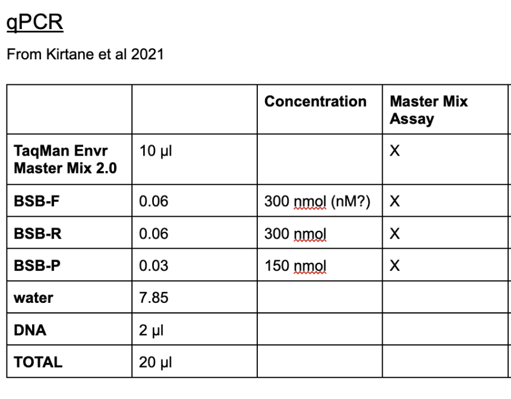 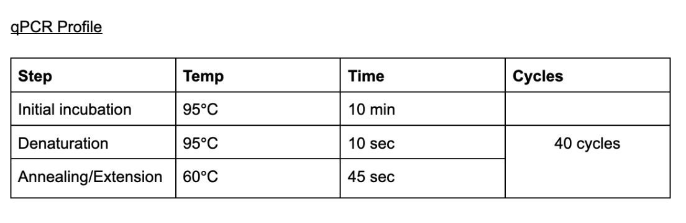
RESOURCES:
- BSB eDNA qPCR supplies
- eDNA BSB qPCR Assay document and protocol resources
- BR.io -> website that qPCR machine is connected to
- only one BR.io account can be connected to a user at a time
- qPCR machine = Bio-Rad CFX Opus 96 (Real-Time PCR System)
- username: gatins; password: gatins
- resource hub for machine
- [gBlock dilution calculator & gBlock plate plans]link(https://docs.google.com/spreadsheets/d/1ZA_yLsmvcSCtYSLhoJNwShIfMoxdycmk1gIEXeU-3TY/edit?usp=sharing)
- sample plate plans
gblock plate and standard curve
NEED:
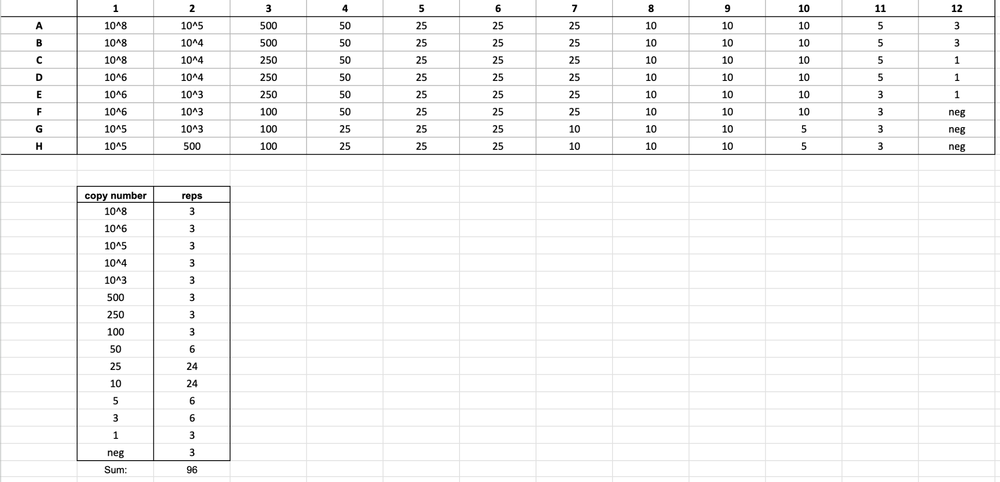
PREP:
STEPS:
-
-
-
-
- BSB-eDNA Protocol File:
- Modified: Aug 28, 2024, 2:13 PM
- Method: CALC
- Lid Temperature: 105 °C
- Reaction Volume: 20 μl
- Steps:
- 95 °C, 00:10:00
- 95 °C, 00:00:10
- 60 °C, 00:00:45 Plate Read
- Goto 2 39X
- Steps:
- BSB-eDNA Protocol File:
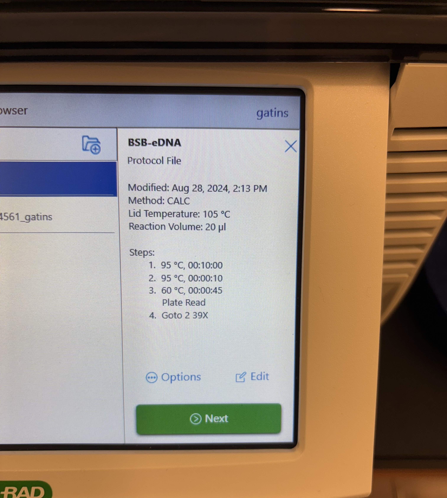
- Run Setup:
- Scan Mode: SYBR/FAM
- Plate ID: I usually labeled with date and if it is a gblock plate or sample plate (eg. 2024-10-03_gBlock4)
- Run File Name: I usually leave as the default (eg. BSB-eDNA_20241003_130438_795BR04561_gatins)
- Save Location: either save to “my file” and extact after the run with a USB or have it upload to BR.io (what I usually do so that I can label each well while the machine is running)
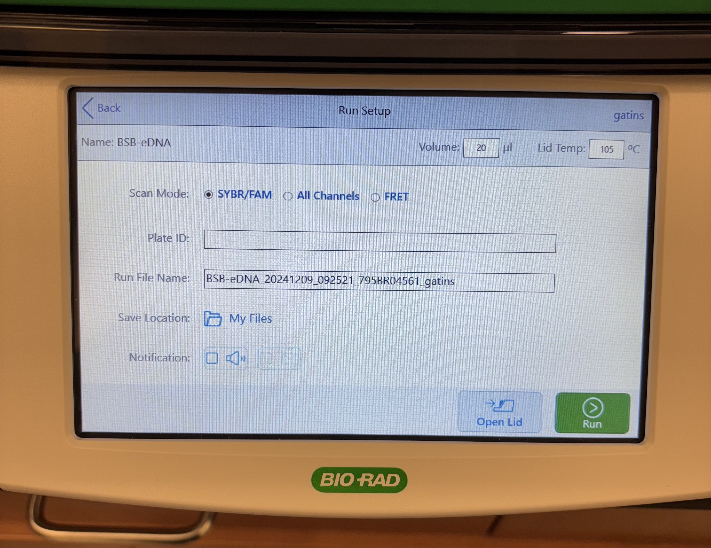
-
- Fluorophore: FAM
- Concentration: gblock concentration (eg. 10^8 = 1.00E+08)
- Sample Type: standard
- Sample Name: name of sample (eg. 10^8)
-
- efficiency should be between 90 and 105, ideally between 97 and 102
- Slope should be between -3.3 and -3.5
- R^2 should be between 0.995 and 1.00
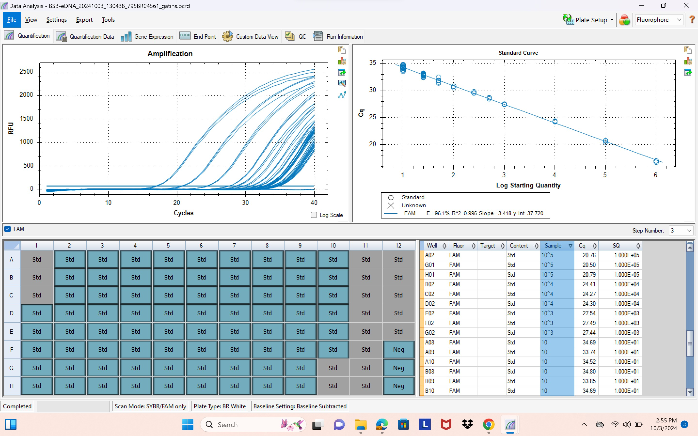
GBLOCK/STANDARD CURVE NOTES:
- grayed out boxes = wells/replicates that have been excluded
- Cq number = at which cycle each well amplified at/crosses the threshold line
- concentration replicates should idealy be within 0.5 Cq cycles of each other
- in example photo above, efficiency = 96.1% & R^2 = 0.996
- avoid freeze-thawing gBlock by making aloquots
- keep everything on ice for as long as you can (including plate; plate ice packs can be found in -20 C freezer)
- the probe is light sensetive
- work in PCR hood when possible (cleaned with UV)
qPCR for samples
NEED:
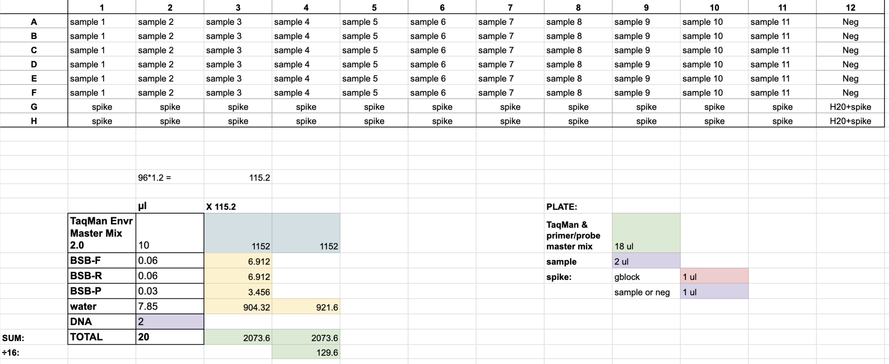
PLATE NOTES:
- each plate can hold up to 11 samples with 6 replicates each
- each column is a new sample
- the last two wells of each column is for positive control (i.e. spike)
- spiked wells: 1 μl of 10^6 gblock & 1 μl of sample or water (same as rest of column)
- the purpose of the spiked wells is to check for DNA inhabition
- column 12 is for negative control; replace the 2 μl sample with 2 μl nuclease-free water
- work in PCR hood as much as possible
- be very careful with gBlock since it is very concentrated arificial DNA
PREP:
STEPS:
-
- BSB-eDNA Protocol File:
- Modified: Aug 28, 2024, 2:13 PM
- Method: CALC
- Lid Temperature: 105 °C
- Reaction Volume: 20 μl
- Steps:
- 95 °C, 00:10:00
- 95 °C, 00:00:10
- 60 °C, 00:00:45 Plate Read
- Goto 2 39X
- Steps:
- BSB-eDNA Protocol File:
- Run Setup:
- Scan Mode: SYBR/FAM
- Plate ID: I usually labeled with date and if it is a gblock plate or sample plate (eg. 2024-11-05_plate5)
- Run File Name: I usually leave as the default (eg. 20241105_112821_CT023639_HOGAN.zpcr)
- Save Location: either save to “my file” and extact after the run with a USB or have it upload to BR.io (what I usually do so that I can label each well while the machine is running)
-
- Fluorophore: FAM
- Sample Type: unknown (columns 1-11, rows A-F), positive control (columns 1-12, rows G-H), negative control (column 12, rows A-F)
- Sample Name: name of sample (eg. 5TW_6hr_2410_01)
qPCR notes:
- for unknown reasons (possibly due to contamination in the qPCR machine), there is a change that samples where very low or no amounts of DNA will amplify very early in the cycles but not increase the same as normal amplifications; if this occurs exclude any odd amplification replicate/well from analysis
example of odd amplification vs normal amplification for one sample (in log scale):
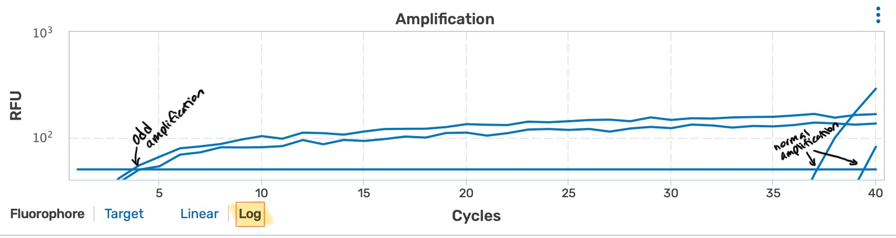
- normal amplification should occur in cycles later than your highest gBlock concentrations (eg. 10^8 or 10^6)
- positive detection is assumed for a samples as long as at least one replicate was positive
Calculating Copy Number
FORMULA:
Copy number = 10^(([average Cq value from qPCR results] - [y-int])/ [slope])
STEPS:
it will look like this:
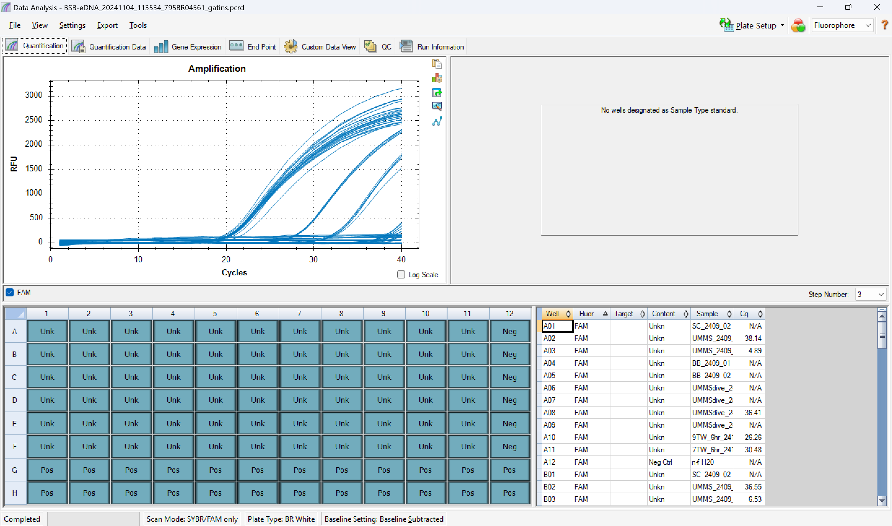
-
- 4.1 see qPCR notes above for examples
- 4.2 all spike + sample wells should have amplified and been between +/- 2 of spike + nuclease-free water wells
- 4.3 negative control wells should have no amplification (cq = N/A)
example:
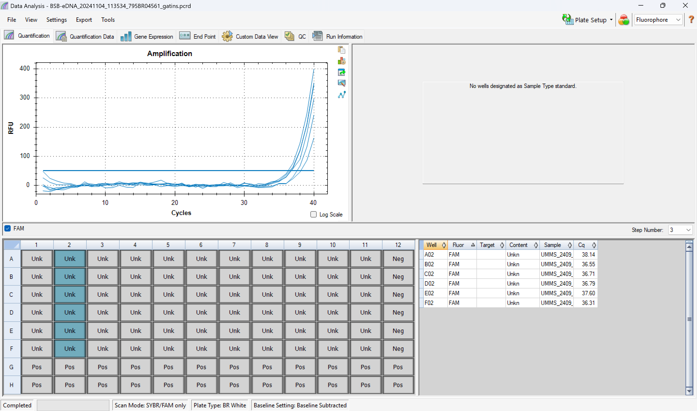
example Quantification Cq Results sheet (zoomed in; only showing replicates for ~2-3 samples):
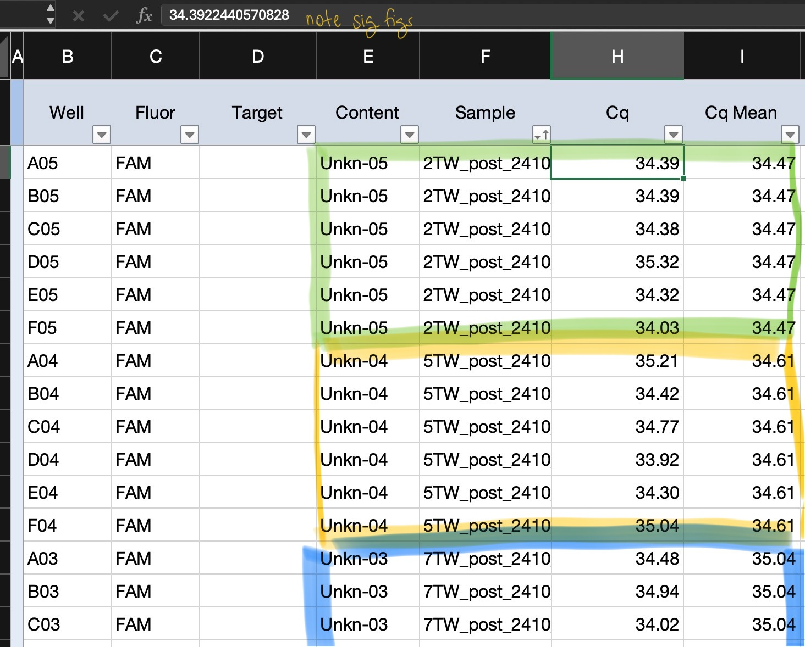